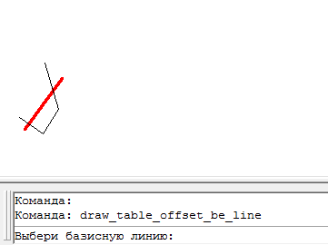

Команда: draw_table_offset_be_line
Команда: draw_table_offset_be_lineЧертит таблицу с данными для выноса трассы по базовой линии
На выбраных объектах (базовой линии и полилинии) обозначается все точки в виде кружочков и текстов. Таблица это не настоящая таблица, а много линий и текстов сформированых в виде таблицы. При вставке "призрак" таблицы висит на курсоре (как при вставке блока).
Програмка старая в свое время нужная сейчас совсем не используемая и не обновляемая. Потому как по координатам оказалось разбивать и точнее и удобнее.
Команда: draw_table_offset_be_line
 Выбери базисную линию:
Выбери базисную линию:
 указывает объект типа отрезок.
указывает объект типа отрезок.
Выбери полилинию трассы:
указывает объект типа двумерная полилиния
Укажи точку вставки данных выноса:
указывает точку для вставки таблицы
Пример работы программы
